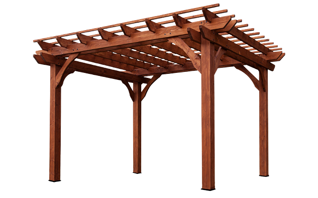

Sobre o programa
O BG Pilar é um programa para a verificação de pilares de madeira serrada. O seu objetivo é auxiliar os usuários no dimensionamento de estruturas de madeira submetidas à compressão simples e à flexocompressão utilizando a nova versão da norma da ABNT NBR 7190 (2022). Além de facilitar os cálculos de dimensionamento, o programa também pode atuar como facilitador didático, sendo utilizado como ferramenta pedagógica para ensino.
Para fazer a verificação dos pilares, o programa pede a entrada de dados a respeito da geometria da peça, propriedades da madeira, força atuante de cálculo e excentricidades. Por meio dessas informações, são feitas as verificações da tensão normal e da estabilidade dos pilares, garantindo que estes estejam de acordo com a norma.
Como produto, o BG Pilar disponibiliza um relatório com a sequência de cálculos realizada, no formato PDF, como forma de auxiliar estudantes e outros usuários interessados.
